因为各种原因，这里只能展现这个小城市的一小部分了，而且大部分是近几年的建筑。很多蛮有地方色彩的小巷，阁楼（本地曰“骑楼”），现在在 google 上找不到，要回到家再想办法了。不爽的是这些有意思的东西正在慢慢消失，旧时的记忆怕以后再也找不回了……
这是从 Google Maps 上搜集到的，Google Map 上的玉林。
云天宫是台湾商人投资的，我记得从小学就开始建了~也是最近一两年才开放。听说还要在里面建东南亚屈指可数的大佛，不知近况如何……
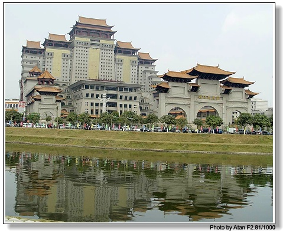
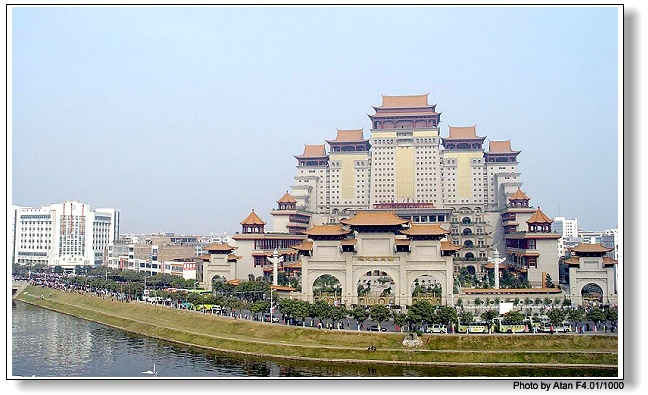
今年刚新建成的，就赶着 04 年 11 月的玉博会。我离开的时候还没福气看到~
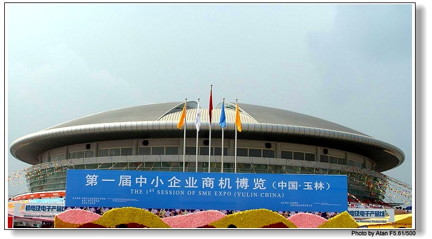
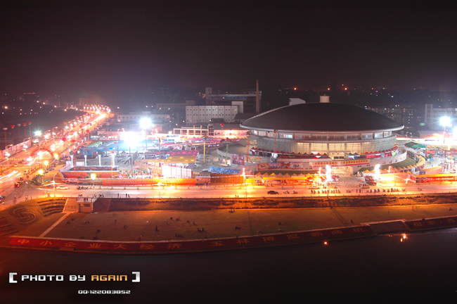
也是最近才建好的大楼，也算小城一景了~
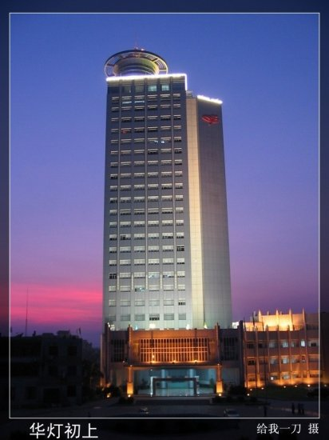
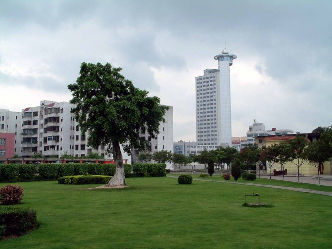
始建于清光绪 34 年（1908年）的老学校，是广西最早的高中。现在好怀念~
主页：http://www.ylgz.net（最近维护……）
一些信息：http://gxylgz.sf.edude.net/
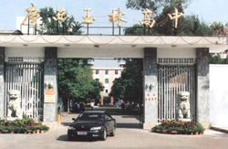 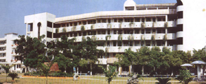
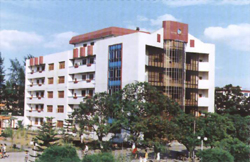 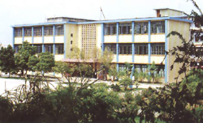
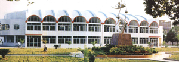 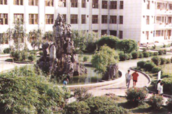
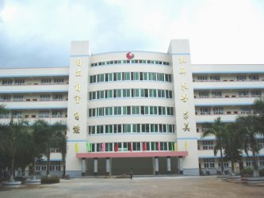
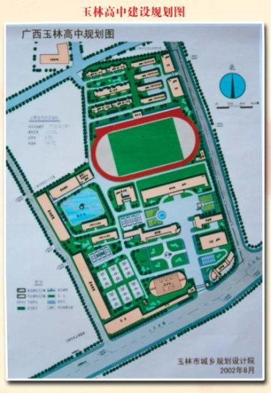
P.S: 图片大部分来自玉林在线，其他的来自 google。